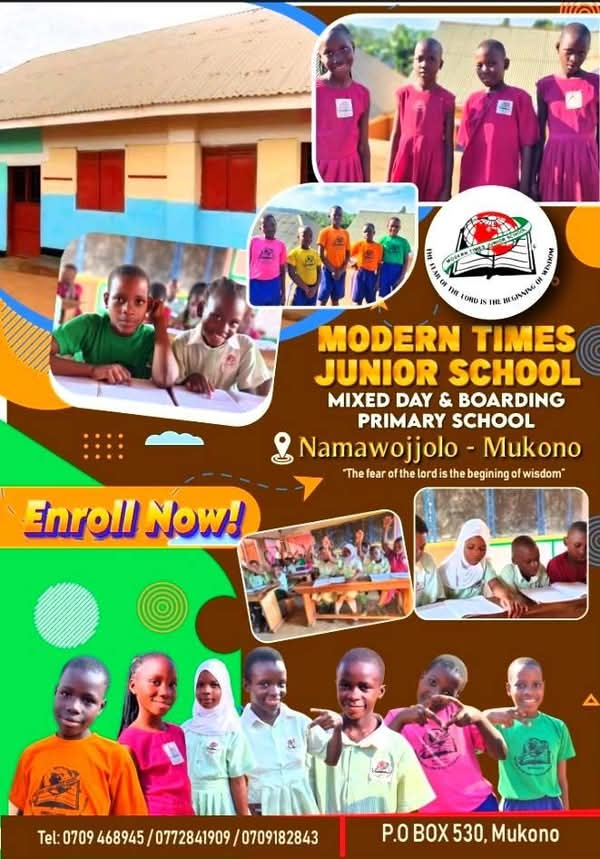
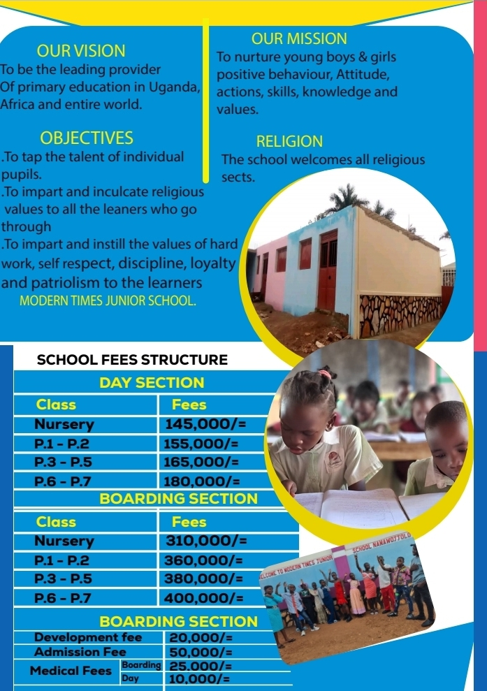

MODERN TIMES JUNIOR SCHOOL - NAMAWOJJOLO
located Uganda,Central region, Mukono district, NAMA-subcounty, Namawojjolo Parish,Bwefulumya Village
200m Off Jinja Kampala Highway behind FOHICO in Jomayi Estate
SCHOOL MOTTO
The Fear of The Lord is the beginning of Wisdom
MISSION STATEMENT
1. Faithfulness
2. Excellence
3. Discovery
4. Time manangement
5. Cooperation
6. Talent identification
MISSION STATEMENT
To nurture young boys and girls with positive behavior, attitudes, actions, skills, knowledge and values.
VISION
To be th leading provider of Primary education in Uganda, Africa and entire world
SCHOOL FEES STRUCTURES
 